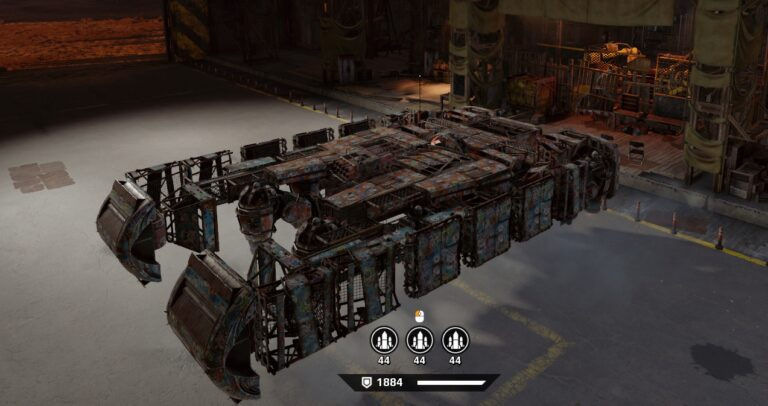
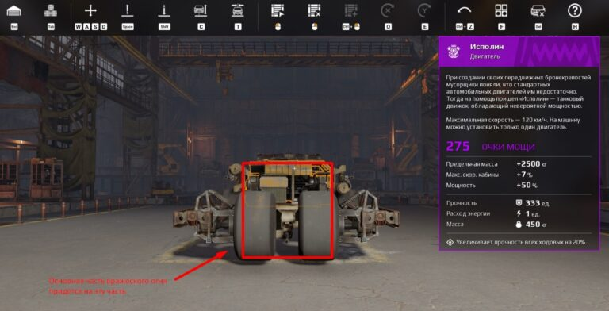
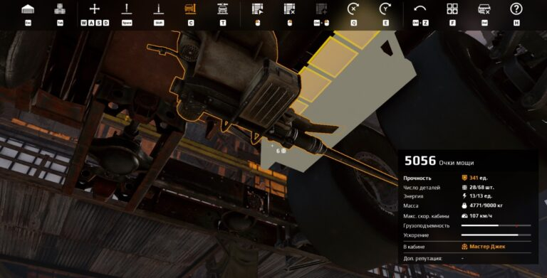
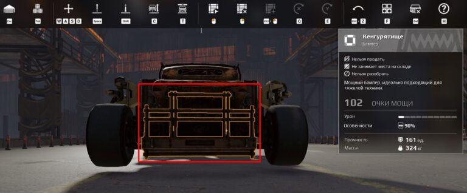

Говоря «крутая машина» игроки обычно подразумевают гармоничное сочетание внешней красоты, бронирования и убойной мощи. В этом небольшом гайде вы научитесь основным принципам инженерии Crossout, которые позволят вам создавать действительно классные крафты. Но сперва немного матчасти.
Этапы строительства
Нельзя просто так взять и начать лепить все в кучу. Иначе получится очередной уродливый гроб на колесах. Так не пойдет. Строительство машины делим на несколько этапов (далее поймете, почему): Костяк – рама, расположение основных модулей и оружия; Броня – укрепление слабых мест броней; Декор – украшение крафта. Начнем с основы нашей машины.
модули взрываються
Не секрет, что многие модули Crossout взрываются при уничтожении, нанося урон остальным ближайшим деталям. Если модуль взрывоопасный, об этом обязательно написано в его описании в игре. В пример можно привести топливные баки, генераторы, ящики с боеприпасами. Некоторые модули взрываются при уничтожении Если расположить такие модули в неудачном месте и близко друг к другу, то при уничтожении одного может возникнуть цепочка взрывов, которая уничтожит весь крафт И такие случаи далеко не редкость. Как понимаете, правильное расположение модулей – это, можно сказать, самая важная часть постройки вашего боевого автомобиля. Поэтому уделите следующему разделу статьи максимум внимания, чтобы не выхватывать ваншоты от первого встречного.

Рабочая сторона машины, оружие и базовые модули
Прежде всего, мы должны понять, какая сторона нашей тачки будет «рабочей». Так я называю ту часть, которая будет принимать максимально много урона в бою. Обычно это передняя часть автомобиля, но в некоторых случаях может быть и тыльная, и даже боковая. У данной машины "рабочая сторона" - тыльная и даже боковая

Например, у одной из ракетных машин (которую я для себя торжественно окрестил «панголином»), «танкует» именно задняя часть, поскольку задача машины – дать ракетный залп прямо на ходу и сразу же сменить направление. Соответственно, в след всегда летит куча снарядов, и нужно держать удар. Ховер - боколет
В пример бокового бронирования можно привести те же «боколёты» на ховерах. Хотя это будет не совсем корректно, так как бок у них выступает фронтальной частью.
Строим правильный костяк машины
Для тренировочного крафта предположим, что наша рабочая сторона – это перед. От этого и будем отталкиваться. Первым делом установим раму 6х1, максимально компактно прикрепим к ней основные взрывоопасные модули (топливные баки, генератор) и радио – место-то все равно остается, так почему бы и нет. Окружим рамой со всех сторон.

Вот эта штука должна находиться примерно под кабиной и ее нужно защитить со всех сторон, чтобы ваша машина не взорвалась в бою. Далее установим кабину и двигатель. Поскольку рабочая сторона у нас перед, то двигатель я поставлю перед кабиной, чтобы он служил дополнительной броней, когда сломают основную.

Теперь нужно понять, где у нас будет находиться оружие. Без оружия машина почти бесполезна, поэтому его тоже важно защитить. Я буду использовать самый простой и один из самых эффективных видов оружия – автопушки. Проще всего – выстроить их в ряд и прикрыть скосами мусорщиков, но я решил расположить автопушки вот таким странным способом. Возможно, это не очень удобно и не слишком эффективно, зато достаточно показательно. В конце концов, не важно, что у машины под капотом, а важно то, кто сидит за рулём ©. Странное расположение оружия

Уже на этом этапе можно выехать из гаража и попытаться застрелить собственную машину в лобовую проекцию с 15-20 метров. Она спокойно переживет первый обстрел до перегрева, сохраняя боеспособность, и будет взорвана только к середине второго. А мы ведь еще даже броню не навесили. Все дело в том, что теперь кабину защищают колеса, фронтальная пушка, да еще и двигатель, а орудия располагаются в разных местах, из-за чего их достаточно сложно уничтожить единовременно даже с небольшого расстояния. При этом завернутая рама в лобовой проекции защищает задние колеса от отстрела, что позволяет бронемашине дольше сохранять подвижность, а значит и боеспособность. С модулями разобрались. Теперь займемся бронированием.
Бронируем машину
Бронируем машину Поскольку наша рабочая сторона – это фронтальная часть, ее и будем защищать в первую очередь. И начнем мы, конечно, с центральной части лобовой проекции, куда, скорее всего, придется основная часть вражеского огня.
В центре у нас находятся колеса, пушка и движок, потому все это дело нужно грамотно прикрыть толстой броней, чтобы минимизировать ущерб. Первым делом я накрыл колеса паровозным отвалом Мусорщиков и установил большие скосы для защиты рамы. Если раму прострелят, то отвалятся и колеса, потому ее также важно защитить. Под автопушки подложил Малое Днище Багги, чтобы отвал не загораживал им обзор. Эта деталь простреливается насквозь, пропуская 90% урона.

Далее перед фронтальной (нижней) пушкой я установил простейший бронелист Мусорщиков, чтобы закрыть ее основание, оставив только дуло. Получилось вот так.

Колеса тоже можно было бы как-то защитить, но я не стал этого делать. Двигатель «Исполин» и без того повышает прочность ходовой, потому пока что этим и ограничимся. А вот боковые автопушки я усилил обычными скосами. Опять же для того, чтобы укрыть основание от вражеских попаданий.

Далее мы должны обязательно защитить взрывоопасные модули, которые буквально торчат из днища машины. Спереди они уже неплохо защищены. Для боков можно использовать продолговатые бамперы. Они устойчивы к ударному урону, потому «утюгам» будет сложнее пробить их своим шипованным носом.

Для задней части используtv бампер «Кенгурятище».
Итак, самая базовая броня готова. Рабочая сторона закрыта, взрывоопасные модули закрыты. Осталось навесить брони по бокам и сзади. Вот только на этом этапе можно включать свои креативные идеи. Но не забывайте, что это все еще этап брони